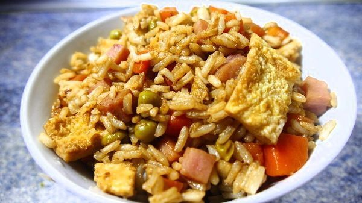

ARROZ TRES DELICIAS CHINO
El arroz tres delicias chino es un plato muy común en los restaurantes de comida china en España. Consiste en un arroz cocido, junto a unas verduras, carne y tortilla (tres delicias) que finalmente se frie en aceite muy caliente. Adicionalmente y aunque, yo lo he visto poco en los susodichos restaurantes, se le puede añadir soja. Le da un toque más oriental y más rico. Una de las cosas buenas que tiene este plato es que es muy fácil de hacer. Y también muy barato. Con 5€ te puede salir para rellenar varios tuppers. A continuación, cómo hacer un arroz tres delicias chino.
PublicarPOLLO ALA NARANJA

El pollo a la naranja es una comida típica de Asia. No tiene nada que ver con el pato al horno a la naranja, plato típico francés. En este caso, se trata de unas pechugas de pollo cocinadas junto a una salsa hecha a base de zumo de naranja. Se puede acompañar de un arroz blanco, que le va a venir “al pelo” a este plato. Es muy fácil y rápido de hacer, como casi todo lo que propongo en esta web. Lo tendrás listo en cuestión de 30 minutos. O menos. Para preparar tu pollo ala naranja necesitarás:
Publicar